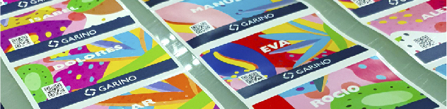

Garino es sinónimo de responsabilidad.
Para clientes de sectores empresariales y de gobierno en distintos países de la región.
Montevideo, Uruguay · Desde 1920
Más de un siglo construyendo confianza con empresas y gobiernos de la región, con la tecnología y el conocimiento más exigentes.
La empresa
Desde 1920 nuestra empresa se desarrolló fiel a sus principios y valores fundacionales. La visión de nuestros clientes y la constante incorporación de tecnología y conocimiento nos llevó a la posición de vanguardia que nos caracteriza.
Dos divisiones

Productos impresos de alta especialización, producidos bajo estándares internacionales de calidad y seguridad.
Ir a Garino Gráfica →Soluciones tecnológicas construidas desde un modelo de gestión basado en eficiencia e innovación.
Ir a Servicios Informáticos →Cómo trabajamos
Para clientes de sectores empresariales y de gobierno en distintos países de la región.
Fieles a los valores con los que nació la compañía en 1920, que siguen guiando cada decisión.
En sus dos divisiones, la compañía se rige por los más exigentes estándares de calidad y seguridad.
Un modelo de gestión que aporta herramientas valiosas para el crecimiento de nuestros clientes.
Incorporación constante de ambos para sostener la posición de vanguardia que nos caracteriza.
Con una estructura ágil y un equipo humano orientado a la búsqueda de soluciones creativas, Garino crece junto a sus clientes, tan lejos como los nuevos desafíos lo demanden.
Servicio en línea